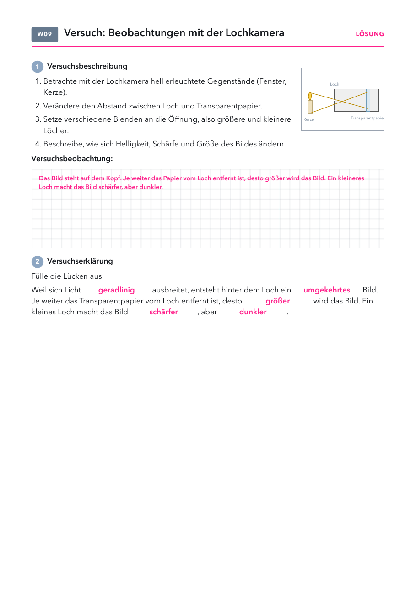

Klasse 7c · Physik · Lochkamera, Rückblick Optik I · voraussichtlich Do 22.10.2026
| Material | Anzahl | Hinweis |
|---|---|---|
| Kerze mit Feuerzeug | 1× | helles Motiv im abgedunkelten Raum |
| Alufolie und Nadel | 1 Rolle | für Blenden mit kleinen und großen Löchern |
| Nagel (etwa 1 mm) | mehrere | für das Loch im Dosenboden, falls jemand keinen hat |
| Material | Anzahl | Hinweis |
|---|---|---|
| runde Chipsdose | 1× | mitgebracht |
| Transparent- oder Butterbrotpapier | 1 Stück | mitgebracht |
| schwarzer Zeichenkarton | 1 Bogen | etwas größer als der Mantel der Dose |
| Zirkel, Schere, Lineal, Kleber oder Tesa | je 1 | aus dem Mäppchen |

| im Alltag | was man sieht | warum |
|---|---|---|
| Lichtflecken unter einem Baum | runde Flecken | Jede Lücke im Laub ist eine Lochkamera. Die Flecken sind Bilder der runden Sonne. |
| dunkles Zimmer, Loch im Rollladen | die Straße steht an der Wand auf dem Kopf | Das Zimmer wirkt wie eine riesige Lochkamera (Camera obscura). |
| Sonnenfinsternis beobachten | eine kleine Sichel auf dem Papier | Mit einem Loch im Karton sieht man die Sonne, ohne hineinzuschauen. |
Strahlengang von Flammenspitze und Fuß, Regler für Abstände und Lochgröße mit Bildgröße, Unschärfe und Helligkeit, ein, zwei oder viele Löcher, Sonnenbilder unter dem Baum.
Lösung: Das Bild steht auf dem Kopf. Je weiter das Papier vom Loch entfernt ist, desto größer wird das Bild. Ein kleineres Loch macht das Bild schärfer, aber dunkler. Lücken: geradlinig, umgekehrtes, größer, schärfer, dunkler.